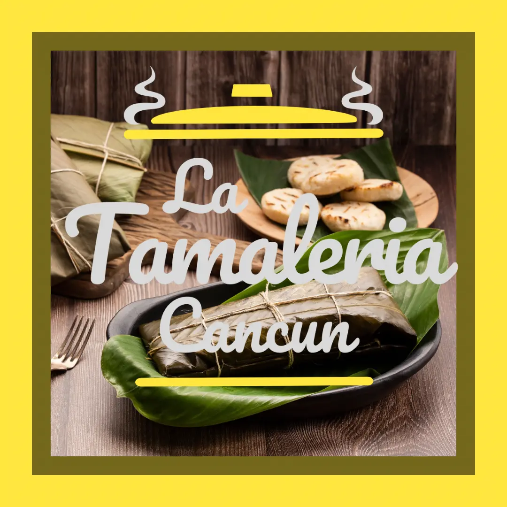

Tamales Veganos: Una Opción Deliciosa
Los tamales veganos son una excelente opción para quienes buscan alternativas deliciosas y saludables sin ingredientes de origen animal. En La Tamalería Cancún, ofrecemos recetas innovadoras y sabrosas, perfectas para todos aquellos que siguen una dieta vegana o simplemente quieren disfrutar de una comida diferente.
Estos tamales se preparan con ingredientes frescos y naturales, asegurando que cada bocado sea una experiencia llena de sabor. Desde tamales rellenos de verduras frescas hasta opciones con sabores exóticos, cada uno es una explosión de auténticos sabores mexicanos sin comprometer los principios veganos.
En La Tamalería Cancún, creemos que todos pueden disfrutar de la rica tradición de los tamales, sin importar sus restricciones alimenticias. ¡Ven y prueba nuestros tamales veganos, y déjate sorprender por su sabor y textura!